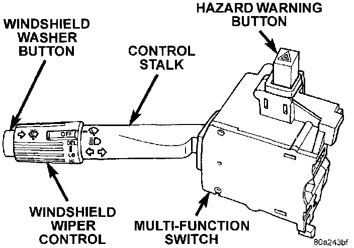

Hazard Warning Switch: Description and Operation
SYSTEM OPERATIONMulti-Function Switch:

The turn signal and hazard warning switches are integral to the multi-function switch assembly. The multi-function switch assembly is secured to the left side of the steering column. This switch contains circuitry for the following functions:
- Turn signals
- Hazard warning
- Headlamp beam selection
- Headlamp optical horn
- Windshield wipers
- Windshield washers.
The information contained addresses only the multi-function switch functions for the turn signal and hazard warning circuits. However, the multi-function switch cannot be repaired. If any function of the multi-function switch is faulty, or if the switch is damaged, the entire switch assembly must be replaced.